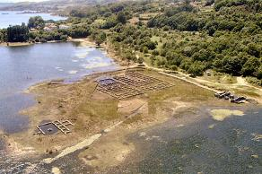
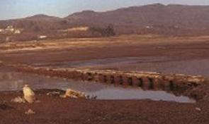
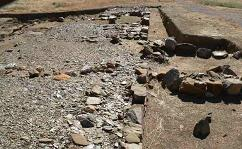
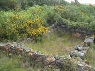

|
AQUAE QUERQUENNAE VIA NOVA
El yacimiento arqueológico de "Aquis
Querqennis", es la tercera villa situada en la Vía XVIII del
Itinerario de Antonino.
|
 |
La villa romana de Aquis Querquennis se
encuentra ubicada en el Ayuntamiento de Bande, Ourense. Este campamento militar controlaba el río
Limia y sus alrededores, ubicación clave, muy importante en la
vigilancia de la la Vía Nova.
Campamento de forma rectangular en
el que destacan sus murallas, su rampa de acceso, sus torres
cuadradas y un foso; también se pueden ver los pilares en los
que se asentaban los almacenes, y se cree que pudo contar con un
hospital ya que aparecieron utensilios quirúrgicos. |
Aquí permaneció por los años 69-79.hasta
el 138 una guarnición mixta (infantería y caballería)
Declarado Monumento histórico-artístico en 1.981, permanece en muchas
ocasiones debajo de las aguas del embalse de las Conchas.El embalse anegó entre otros a Ponte das
Poldras que en raras ocasiones todavía se puede ver.
|
 |
CAMPAMENTO ROMANO DE CÁCERES EL
VIEJO
El campamento romano de Cáceres el Viejo se encuentra a
pocos kilómetros de Cáceres, en
dirección a Torrejón el Rubio.
|
 |
El yacimiento arqueológico de Cáceres el Viejo se identifica con Castra Caecilia, un campamento romano
fundado por el general Cecilio Metelo durante las guerras sertorianas, en
torno al año 80 a .C.
Cáceres el Viejo es uno de los pocos restos de campamentos de época
republicana en la Península Ibérica.
El campamento es de grandes dimensiones, y debió de perdurar bastantes años a
juzgar por los restos de construcciones y la riqueza de los objetos hallados.
Está en un recinto rectangular definido por una muralla de mampostería de
cuatro metros de anchura y un doble foso que la rodea.
|
CAMPAMENTO ROMANO DE SOBRADO DOS
MONXES
|
Sobrado dos Monxes, A Coruña, es un asentamiento romano del Siglo II
.
Se sabe que los legionarios eran militares de la II Cohorte de
Roma con base en la Vía Lucus Augusta, de especial importancia por ser el
destacamento militar de Brigantium, el actual Betanzos. |
 |
CAMPAMENTO ROMANO DEL CINCHO
El Campamento romano
del Cincho, Cantabria es de época
alto imperial. El
yacimiento fue descubierto a finales del siglo XX por M. García Alonso, quien
ha realizado excavaciones en el mismo. Se han recuperado algunos materiales
arqueológicos, monedas, armas, etc. El campamento esta situado en
la cima de una colina, de planta rectangular con unos
152.000 metros cuadrados, perimetrado por un muro (agger) y un foso (fossa).
En el amurallamiento externo hay varias puertas en clavícula (claviculae).
El interior del recinto está dividido por un amurallamiento con foso.
|